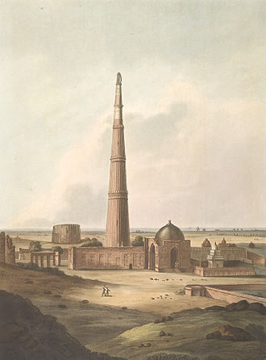

The Qutb Minar, also spelled Qutub Minar and Qutab Minar, is a minaret and "victory tower" that forms part of the Qutb complex, which lies at the site of Delhi's oldest fortified city, Lal Kot, founded by the Tomar Rajputs. It is a UNESCO World Heritage Site in the Mehrauli area of South Delhi, India. It is one of the most visited tourist spots in the city, mostly built between 1199 and 1220.
It can be compared to the 62-metre all-brick Minaret of Jam in Afghanistan, of c.1190, which was constructed a decade or so before the probable start of the Delhi tower. The surfaces of both are elaborately decorated with inscriptions and geometric patterns. The Qutb Minar has a shaft that is fluted with "superb stalactite bracketing under the balconies" at the top of each stage. In general, minarets were slow to be used in India and are often detached from the main mosque where they exist.

The Qutb Minar was built over the ruins of the Lal Kot, the citadel of Dhillika. Qutub Minar was begun after the Quwwat-ul-Islam Mosque, which was started around 1192 by Qutb-ud-din Aibak, first ruler of the Delhi Sultanate.
The Ghurids
The construction of the Qutb Minar was planned and financed by the Ghurids, who emigrated to India and brought Islam with them. The Ghurids, historically known as the Shansabanis, were a clan of Tajik origin that hailed from Ghur, the mountainous region of modern-day western Afghanistan. In the late eleventh century to the early twelfth century, the different sects of this nomadic clan united, losing its nomadic culture. During this time, they also converted to Islam.
Architecture
Pesrian-Arabic and Nagari in different sections of the Qutb Minar reveal the history of its construction and the later restorations and repairs by Firoz Shah Tughluq (1351-88) and Sikandar Lodi (1489-1517). The height of Qutb Minar is 72.5 meters, making it the tallest minaret in the world built of bricks.The tower tapers, and has a 14.3 metres (47 feet) base diameter, reducing to 2.7 metres (9 feet) at the top of the peak. It contains a spiral staircase of 379 steps.